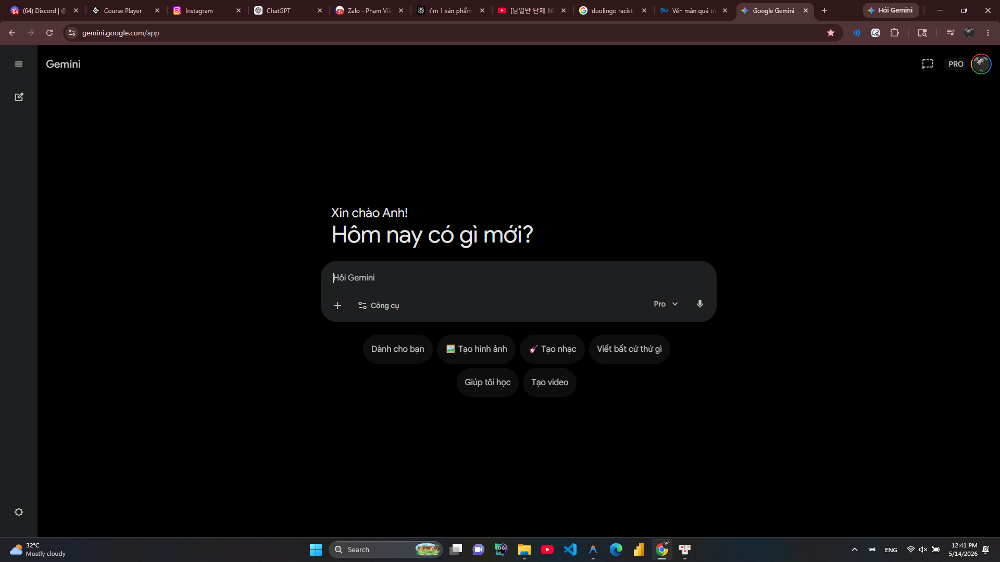
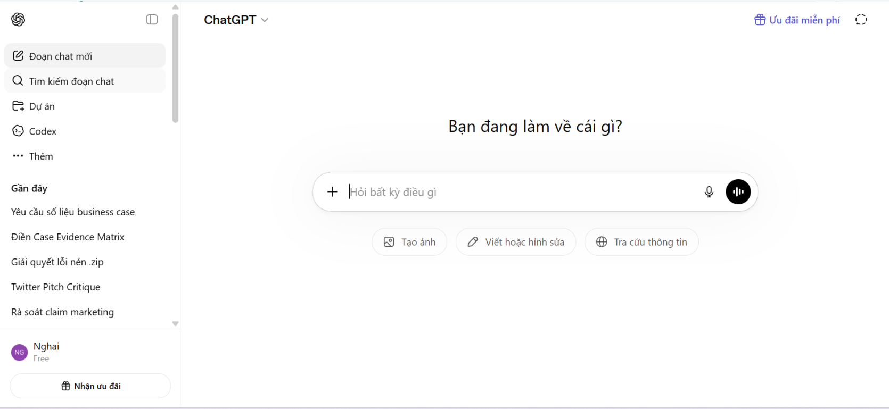
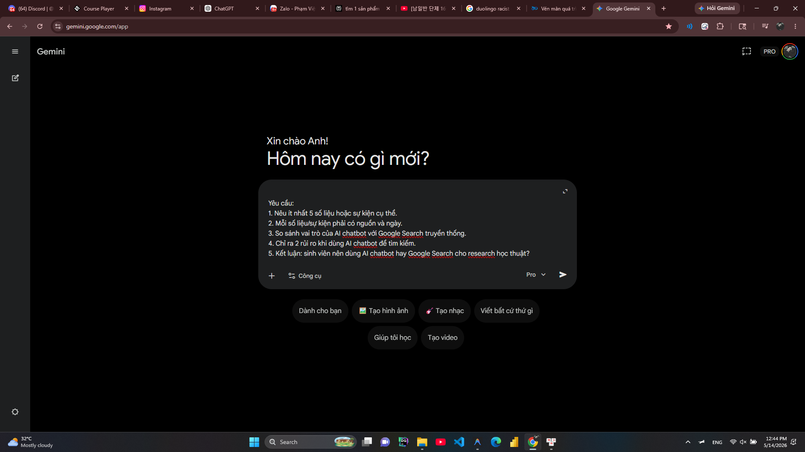
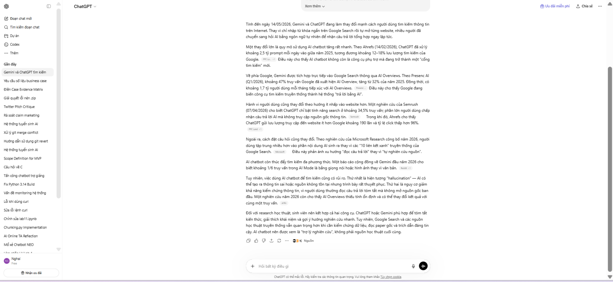
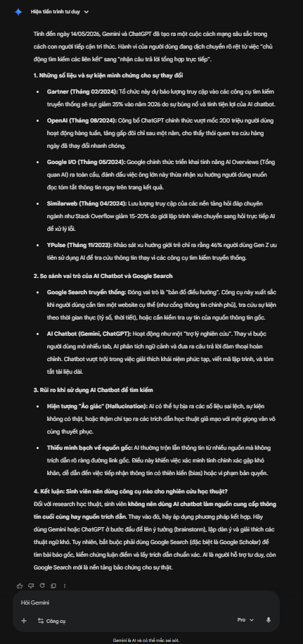
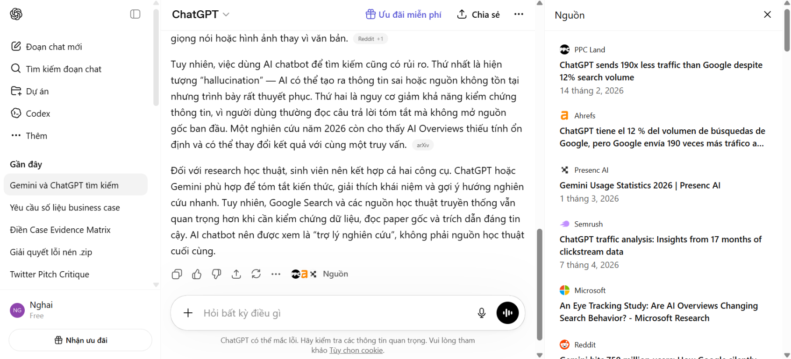
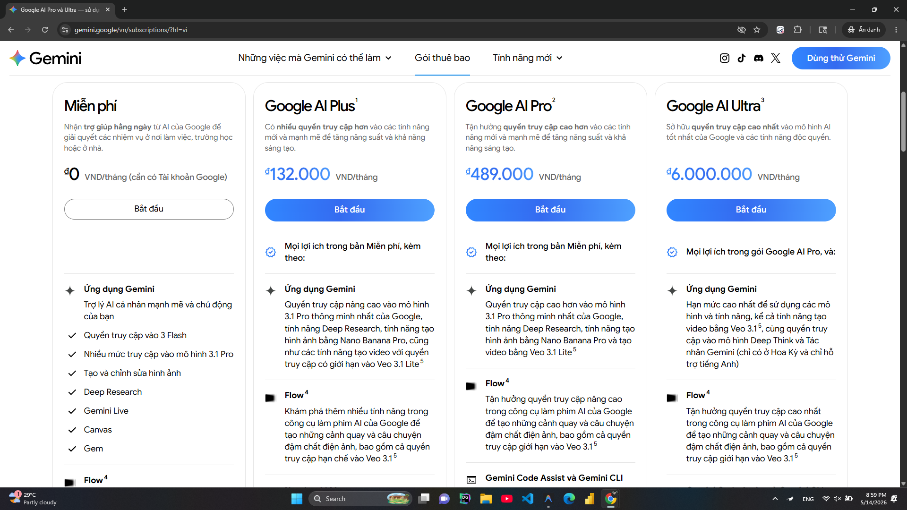
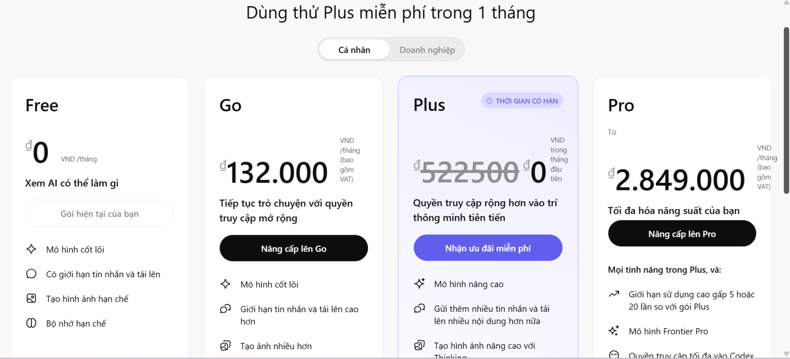

Ngành chọn: A — Tìm kiếm
Nhóm thực hiện:
Phạm Việt Anh (2A202600273) & Hoàng Đức Nghĩa (2A202600371)
Day 26 - AI Product Strategy
| Yếu tố | Sản phẩm A: Gemini | Sản phẩm B: ChatGPT |
|---|---|---|
| Entry point | Giao diện chat tích hợp hệ sinh thái Google | Giao diện chat tối giản, tập trung vào text |
| Ý định user | Tìm kiếm thông tin nhanh, cập nhật từ Google | Tổng hợp, phân tích sâu và tra cứu có nguồn |
| Surface chính | Web Chat interface | Web Chat interface |
Nhận định: Cả 2 đều dùng chat interface làm điểm chạm đầu tiên. Gemini cá nhân hóa hiển thị nhờ tài khoản Google, trong khi ChatGPT tập trung thuần túy vào prompt.




| Tín hiệu | Gemini (A) | ChatGPT (B) |
|---|---|---|
| Citation (Dẫn nguồn) | Yếu (Phải ấn Double-check) | Tốt (Citations inline) |
| Control (Sửa đổi) | Có (Modify response, drafts) | Có (Edit prompt) |
| Confidence indicator | Có (Google verification) | Không rõ ràng |


| Yếu tố | Gemini (A) | ChatGPT (B) |
|---|---|---|
| Gói miễn phí | Có (Flash/Pro) | Có (GPT-4o mini / GPT-4o giới hạn) |
| Giá thấp nhất | $20/tháng (Advanced) | $20/tháng (Plus) |
| Quota / Limit | Rộng rãi ở bản free | Giới hạn tin nhắn GPT-4o |


| Loại Moat | Gemini (A) | ChatGPT (B) |
|---|---|---|
| Moat chủ đạo | Distribution (Mặc định trên Android, Chrome, Workspace) | Brand & Network (Đồng nghĩa với AI, word-of-mouth) |
| Rủi ro | Tự triệt tiêu (Cannibalize) chính Google Search | Phụ thuộc chi phí compute lớn |